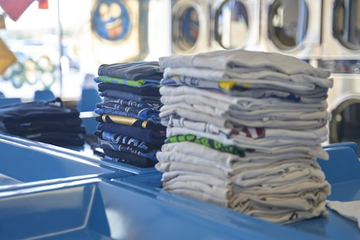
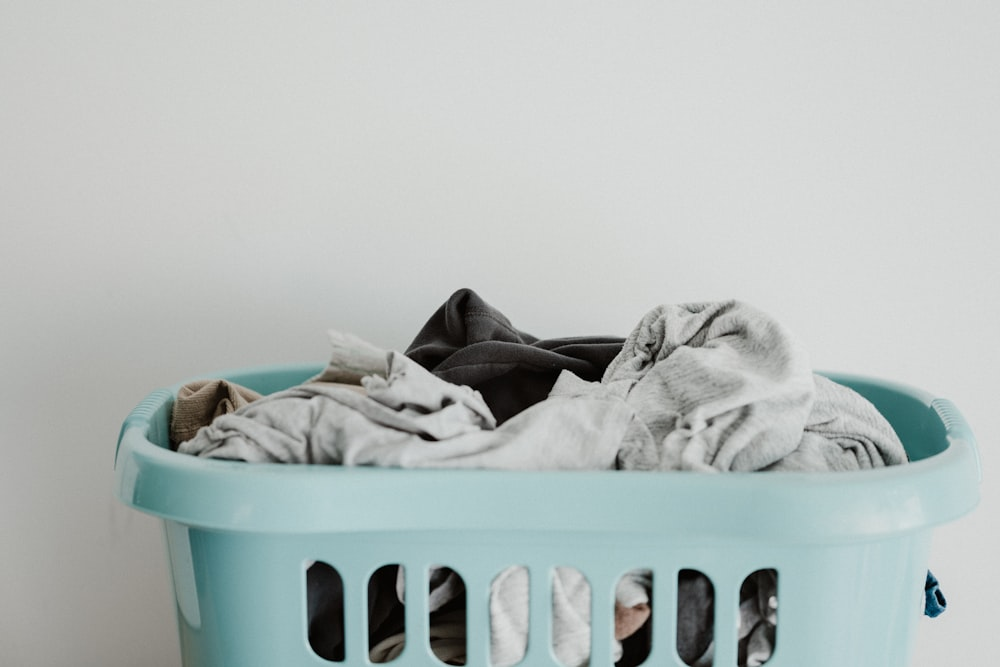

Manual de manchas · etiqueta ISO 3758
Sai ou
não sai?
Antes de atravessar a cidade: diga o que aconteceu e qual é a peça. A gente responde aqui — inclusive quando a resposta é não sai.
Rua Frei Gaspar, 000 — Centro · seg a sex 8h–18h
Manual de manchas · etiqueta ISO 3758
Antes de atravessar a cidade: diga o que aconteceu e qual é a peça. A gente responde aqui — inclusive quando a resposta é não sai.
Recusar na hora custa menos que devolver a peça pior. Nesses casos não cobramos nada — e dizemos para onde ir.
Preço fechado por peça, não por quilo — o quilo esconde o que é caro. Prazo em dias úteis, contado da entrega no balcão.
| Peça | Fibra | Preço | Prazo |
|---|
São cinco símbolos e uma regra: o X em cima significa proibido. Isso é norma internacional (ISO 3758), não invenção de lavanderia.
Balcão na rua, sem aplicativo e sem cadastro. Quem atende é quem lava.


Sobre as respostas desta página. O veredito cruza a família química da mancha com a fibra da peça e vale como estimativa: mancha antiga, tratamento caseiro anterior e tingimento instável mudam o resultado. Quem decide de verdade é a peça no balcão, com a etiqueta na mão. Os símbolos usados aqui seguem a norma ISO 3758. Preços e prazos são ⚠️ DEMO — este é um site de demonstração da Vitrine Certa.
Este é um site Premium da Vitrine Certa: um site que responde a pergunta do cliente antes de ele ligar. Feito sob medida para o seu serviço, no ar em 48h.